مجموعة السراني × شركة أوريل
فارم مارشال
من الملاحظة إلى الدليل.
مقترح لإطلاق مرحلة تشغيل أولية بإشراف متخصص في المملكة العربية السعودية.
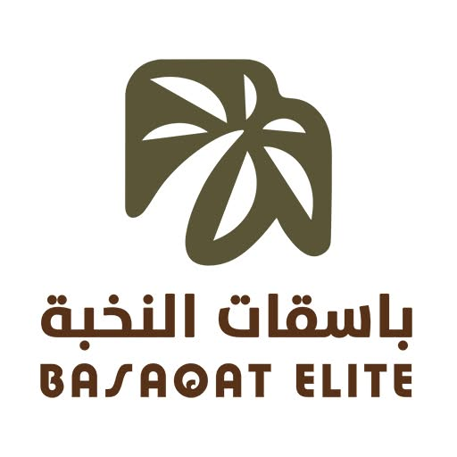
وزارة البيئة والمياه والزراعة · وزارة الداخلية · وزارة الدفاع
قبل أن نتحدث
الفكرة في أربع دقائق
المشكلة الحقيقية
هذه ليست مشكلة زراعية.
إنها فجوة معلوماتية.
كلفة هذه الفجوة
ستة عراقيل، وسبب واحد
اكتشاف متأخر
المرض ينتشر قبل أن يراه أحد.
مياه غير منسوبة
الاستهلاك معروف إجمالاً، لا بحسب كل منطقة.
عمل غير موثّق
تُبلَّغ المهمة منجزة، ولا شيء يثبت ذلك.
ساعات تُستهلك في التنقل
وقت الفحص يذهب إلى الطريق لا إلى الحكم الفني.
خبرة موزعة على مساحات شاسعة
مهندس زراعي واحد، وآلاف الأفدنة.
لا سجل للموسم
لا يمكن إثبات الجودة بعد انقضاء الموسم.
حجم الخسارة يختلف باختلاف المحصول والمنطقة والآفة والموسم. أما ما لا خلاف عليه فهو أن تأخر الاكتشاف يرفع كلفة التدخل وتعقيده معاً.
ما هو فارم مارشال
سلسلة أدلة مترابطة تقود من التشخيص إلى القرار والتنفيذ
- فحص جوي مصرّح به
- حساسات أرضية ومستشعرات
- تقارير المشغّلين الميدانيين
- كل المواسم السابقة
بالموقع والزمن
بموعد محدد
الإنجاز
والنتيجة الموثّقة تصبح خط الأساس للموسم القادم.
توضيح الأدوات المستخدمة
ثلاث طبقات، وثلاث وظائف مختلفة
| الطبقة | ما تؤديه | ما لا تستطيعه |
|---|---|---|
| الطائرات المسيّرة | فحص دوري للمزرعة كاملة، وتسميد وتلقيح جوي | قياس دقيق كالمستشعرات |
| الحساسات الأرضية | قياس مستمر للمياه والتربة والكهرباء | رؤية الحقل كاملاً |
| الخبير المؤهل | التشخيص والمسؤولية والاعتماد النهائي | الحضور في كل مكان في آن واحد |
الذكاء الاصطناعي
ما يفعله الذكاء الاصطناعي وما لا يفعله
يفعل
- ترتيب مناطق المزرعة بحسب مدى اختلاف أدائها عن نمطها التاريخي المعتاد.
- رصد الحالات ذات الأولوية ورفعها للمختصين
- التحسّن مع كل فحص موثّق
لا يفعل
- لا يعتمد علاجاً
- لا يغلق حالة
- لا يتحمل مسؤولية نظامية أو تجارية
عرض حي · ٢ من ٣
خبير المزرعة أولاً، و نخبة تسانده
- خبير المزرعة يبقى صاحب القرار — نوسّع مداه ولا نستبدله
- يراجع المزرعة كاملة من شاشته، وينزل ميدانياً حيث يستحق الأمر حضوره
- وحين تحمل الحالة تفاصيل غير مألوفة، لا يتوقف الحل عند خبرة فرد، بل يمتد إلى شبكة من الخبراء حول العالم.
- الشبكة موثّقة: مؤهل أكاديمي، وتخصص محصولي، وتقييم مبني على توصياتها السابقة
جولة في المنصة
من المالك إلى العامل: كل خطوة مرئية وموثّقة
مالك المزرعة
نظرة شاملة إلى المزرعة
يرى ما يجري في المزرعة، والحالات التي تحتاج إلى قرار، في مكان واحد.
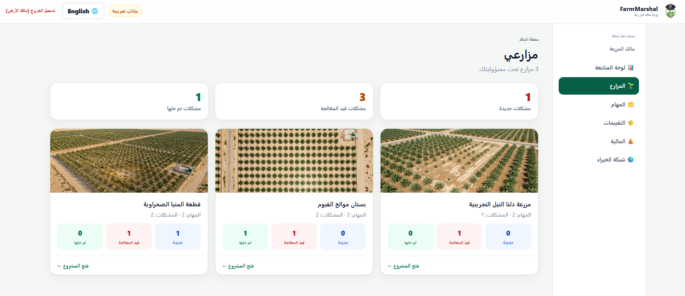
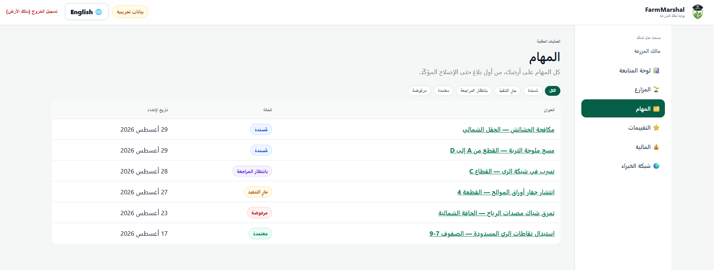
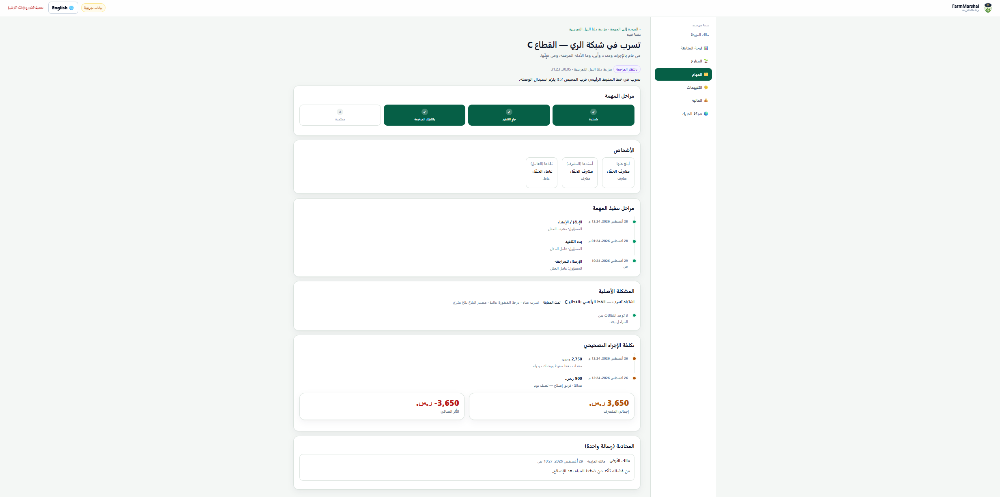
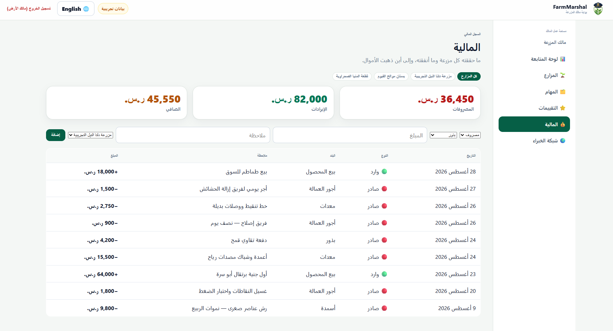
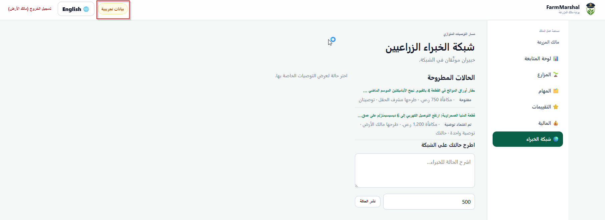
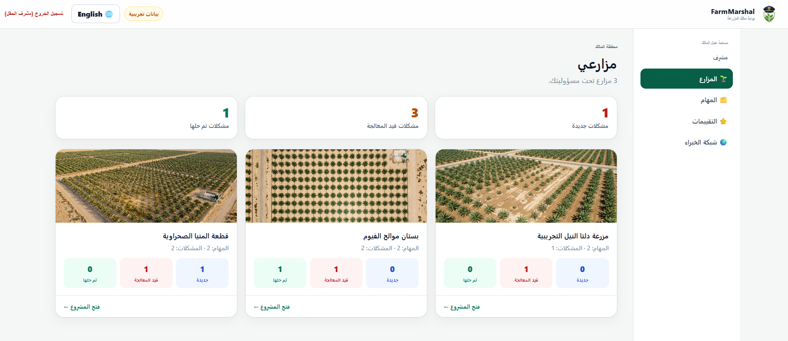
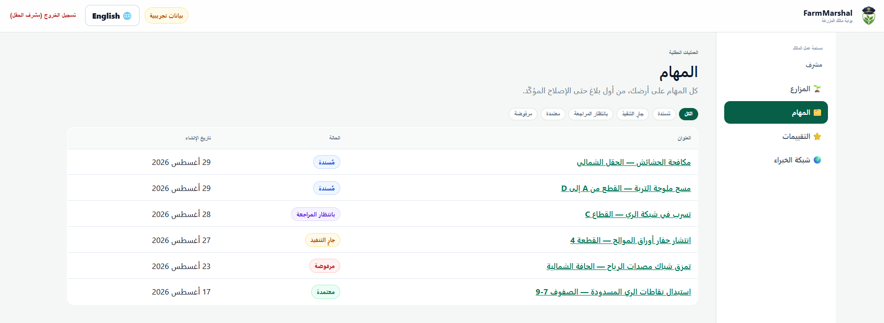
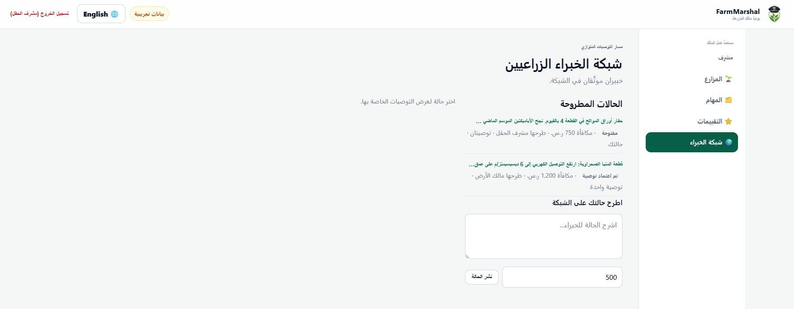
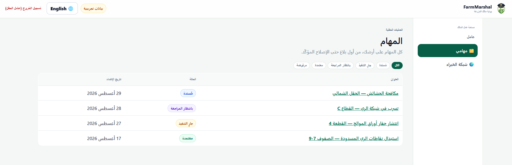
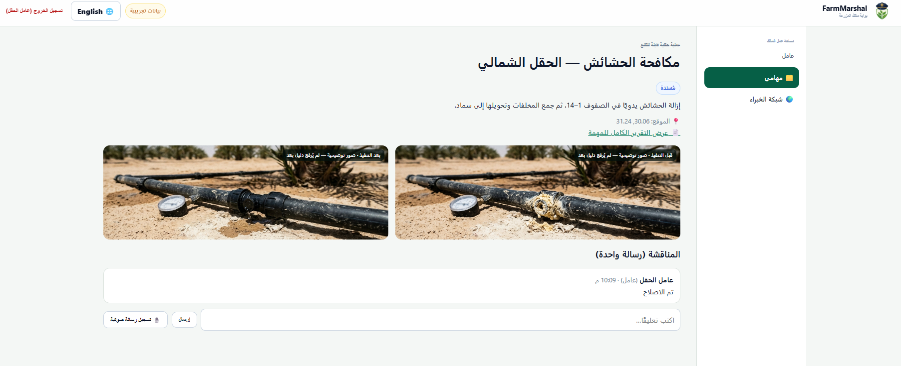
مهمة بموعد محدد، ومتابعة حتى الإنجاز
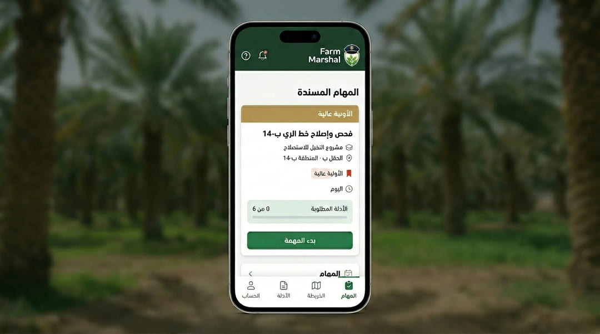
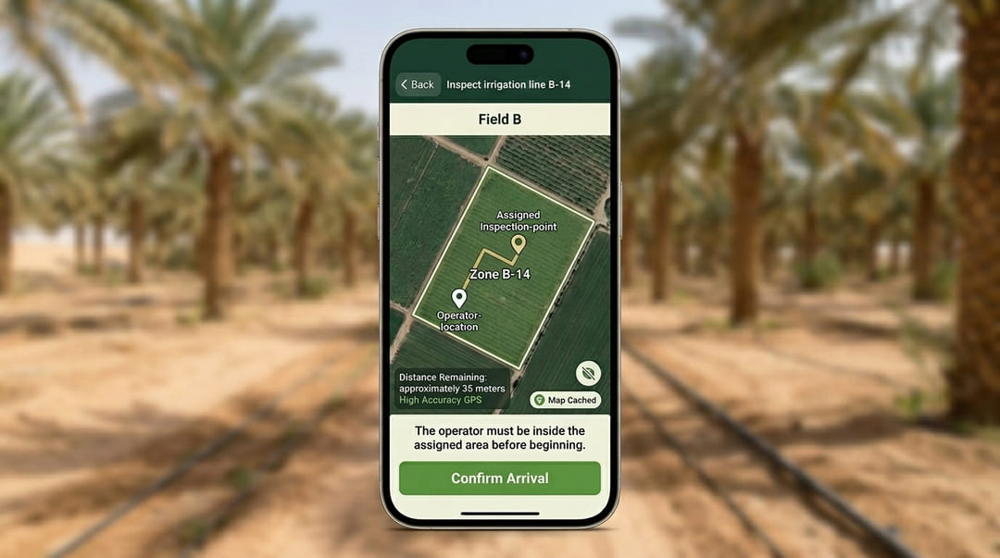
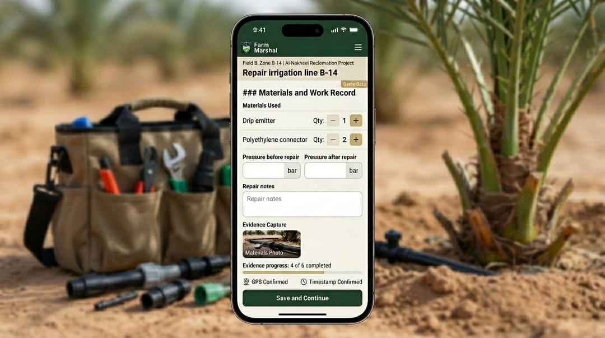
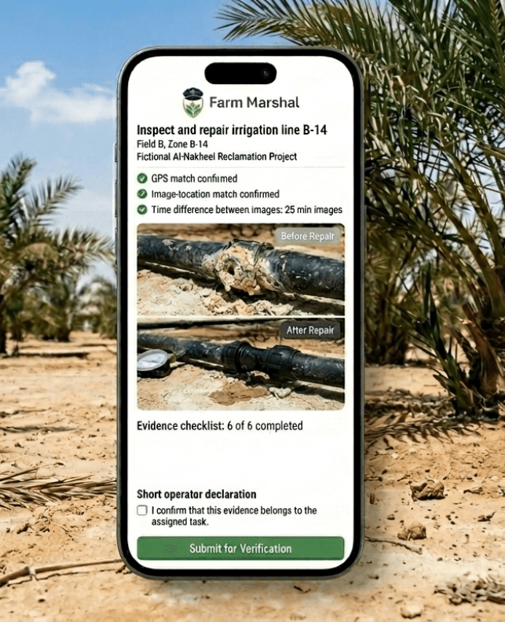
البيئة والمياه والزراعة
مياه يمكن حسابها.
وتدخّل قبل الانتشار.
| ما تحصل عليه الوزارة | الآلية |
|---|---|
| وضوح استهلاك المياه لكل منطقة وكل موسم | نقاط قياس للري، وقياس عن بُعد للمحابس، واكتشاف جوي للتغيّرات غير المعتادة |
| تدخّل أبكر في صحة النبات | فحص متكرر بمسارات ثابتة، ومقارنة بالتاريخ المسجل |
| قناة تعميم تصل إلى كل مزرعة مشاركة | تعميم الوزارة يظهر في تطبيق كل مزرعة ومشغّل، مع إثبات الاطّلاع |
| تقارير مجمّعة بحسب المنطقة والمحصول | أرقام مجمّعة بلا هوية مزرعة — لا تُعرض حيازة بعينها |
| قاعدة بيانات موحدة وقابلة للمقارنة | بروتوكول فحص واحد في كل مزرعة مشاركة |
| تحقق من تقدّم إعادة تأهيل الأراضي | دليل مؤرَّخ ومحدَّد الموقع مقابل الحدود المخططة |
| وصول الإرشاد الزراعي إلى الحيازات النائية | شبكة خبراء موثّقين، دون حاجة إلى سفر |
ما تراه الوزارة تقارير مجمّعة على مستوى المنطقة والمحصول. أما بيانات المزرعة المحددة فتبقى لمالكها، ولا تُشارك إلا بموافقته أو بأساس نظامي.
وزارة الداخلية
كل رحلة مسجّلة.
وكل طيار مسيّرات معروف.
وكل مسار محفوظ.
| الضابط | كيف يُفرض |
|---|---|
| طائرات مسجّلة | لا يمكن إسناد مهمة إلى طائرة غير مسجّلة |
| طيارو مسيّرات معتمدون ومعروفون | سجل المشغّل مرتبط بكل مهمة؛ ولا وجود لرحلة مجهولة |
| حدود جغرافية مقيّدة | لا يمكن توليد مهمة خارج النطاق المصرّح به |
| تصريح لكل رحلة | غرض ونافذة زمنية وجهة معتمِدة — لا تصريح مفتوح |
| سجلات طيران كاملة | الإقلاع والهبوط والمسار والحمولة محفوظة للجهة المختصة |
| وصول منضبط للصور | كل اطّلاع أو تصدير منسوب إلى مالك معروف ومزرعة محددة |
وزارة الدفاع
بيانات سيادية.
وقدرة قابلة للتوطين.
إقامة البيانات
الصور وبيانات القياس تُخزَّن داخل المملكة. ولا تغادر صور التضاريس المملكة.
لا قناة قياس أجنبية
بيانات الطيران والحمولة لا تمر عبر سحابة مُصنّع أجنبي. وهذا يقيّد اختيار العتاد.
مسار نقل المعرفة
تنطلق المرحلة الأولى بالاستفادة من الحلول الجاهزة، فيما تركز الثانية على نقل المعرفة وتأهيل الكفاءات الوطنية لإدارة المنظومة وتطويرها.
كادر مؤهل للتشغيل
طيارو مسيّرات معتمدون ومدرّبون وفق برامج متخصصة، لتخطيط المهام وتشغيل المسيّرات بأمان وكفاءة.
انضباط المجال الجوي
تنفيذ المهام المدنية الروتينية بشكل صحيح يبني الثقافة الإجرائية التي تهم وقت الضغط.
بيانات زراعية محمية وموثوقة
نحافظ على خصوصية بيانات المزرعة، وننظم الوصول إليها بما يخدم القرارات الزراعية والرقابية المعتمدة.
الحوكمة
من يتحكم بماذا
| الطرف | يرى | لا يرى |
|---|---|---|
| مالك المزرعة | كل ما يخص حيازته | أي حيازة أخرى |
| الخبير | المزرعة المسندة إليه فقط | أي حيازة أو مزرعة خارج نطاق مسؤوليته |
| مشغّل المسيّرة | نطاق المهمة المصرّح به فقط | محتوى الحالة أو نتائج الخبير |
| الجهات الحكومية | سجلات الطيران، وبيانات المزرعة وفق أساس نظامي محدد | أي بيانات أخرى لا يشملها ذلك الأساس النظامي. |
| مشغّل المنصة | بيانات التدقيق | لا شيء بصمت — كل اطّلاع مسجّل |
مدد احتفاظ محددة · سجل تدقيق غير قابل للتعديل · الذكاء الاصطناعي لا يحل محل قرار الخبير المسؤول — بل يرتّب أولوية ما يُنظر فيه أولاً.
الامتثال
سلسلة تصريح الطيران
المهمة
ومناطق الحظر
الطائرة
طيار المسيّرات
الجهة المختصة
ضمن النطاق
السجلات
الوصول
ولا توجد في هذه السلسلة خطوة يمكن تخطّيها.
قيمة المزرعة
كل قرار أفضل يصنع قيمة داخل المزرعة
كفاءة المياه والطاقة
- م³ محفوظة لكل هكتار
- ك.و.س أقل لكل م³
- تكلفة ضخ أقل لكل طن منتج
نرصد الاحتياج حسب المنطقة، ونقيس أثر القرار على المياه والطاقة والإنتاج.
فحص واستجابة أكثر تركيزاً
- زمن أقصر من التنبيه إلى التحقق
- زيارات موجهة إلى مناطق الأولوية
- إجراءات موثقة حتى الإغلاق
ينتقل الفحص إلى المكان الأهم، ويصل القرار إلى التنفيذ بصورة أسرع وأكثر وضوحاً.
حماية المحصول والجودة
- أطنان تم تجنب خسارتها
- نسبة تحسن درجات الجودة
- هامش مساهمة تمت حمايته
نحسب القيمة من المحصول الذي ثبتت حمايته، وليس من كامل قيمة الإنتاج.
تفصيل قيمة المزرعة · الإسناد ومنع التداخل
من فرصة محتملة إلى أثر مُثبت
أثر المنصة على نضج القرار
نبدأ من مستوى المزرعة الحالي، ونضيف البيانات والرصد والخبرة والتنفيذ والقياس لإكمال دورة القرار، دون اشتراط استبدال البنية الحالية أو أتمتتها بالكامل.
أثر المنصة على الري
نقيس ما تحققه المنصة من تحسين في المراقبة والقرار وسرعة التنفيذ، وليس الوفر الناتج عن استبدال المضخات أو شبكات الري.
أثر المنصة على المحصول والعمل
تساعد المنصة فرق الفحص على البدء بالمناطق ذات الأولوية. وتُحسب قيمة المحصول المحمي بصافي العائد، بينما تُعرض ساعات العمل المتاحة كقيمة تشغيلية مستقلة.
من الرصد إلى أثر موثّق
تتطور جودة القرار من البيانات المتفرقة إلى نتيجة قابلة للقياس
ونتيجة قِيست
تفصيل القيمة الوطنية · استجابة قابلة للتدقيق
من الإعلان الرسمي إلى إجراء موثّق
مؤشر ماء
م³/فدان · م³/نخلة منتجة · م³/طن قابل للتسويق. F2, F3, P1
مؤشر استجابة
الوقت من الإعلان أو الكشف إلى الإجراء، ونسبة الإقرارات والتنفيذ في النافذة المحددة. P1
مؤشر قدرة
حقول بسجل موحد، وتنبيهات مؤكدة حسب المنطقة والمحصول، وخبراء ومشغلون تلقوا تدريباً. P1
لا قيمة مالية لمجرد استلام الإعلان.
S8: وزارة البيئة والمياه والزراعة، الإرشاد والتنبيهات ذات الصلة · F3: سجلات الحقل والإنتاج · P1: سجل التجربة · متطلبات الموافقة والخصوصية والحَوْكمة تطبق على أي بيانات مشاركة
التوطين
ما القدرات التي يؤسس لها المشروع داخل المملكة؟
طيارو مسيّرات معتمدون
- نوظّف طياري مسيّرات حاصلين على الاعتماد في كل منطقة تشغيلية.
مشغّلون ميدانيون
- نُدرّبهم على التقاط الدليل والتحقق الأرضي والتعامل مع المعدات.
شبكة خبراء عالمية
- خبرة زراعية من مختصين حول العالم تصل إلى المزرعة السعودية دون انتقالهم إلى المملكة.
مراجعة الصور والوسم
- يراجع الخبير التسجيل، ويضيف ملاحظاته مباشرةً على الصورة.
- تُوثَّق نتائج كل موسم لتتحول إلى دروسٍ مستفادة تدعم قرارات المزرعة مستقبلاً.
مركز تشغيل داخل المملكة
- تخطيط المهام ومتابعتها ودعم المزارع، بكوادر محلية.
قاعدة معرفة وطنية
- استهلاك المياه حسب المنطقة والموسم.
- الأمراض والحالات المرصودة.
- عدد التوصيات الحاصلة على تقييم مرتفع.
- مستوى موثوقية الحساسات المستخدمة.
قاعدة المعرفة الوطنية تُبنى من بيانات المزارع التي وافقت على المشاركة، وبصيغة مجمّعة. وتُدرَج أعداد الوظائف بعد تثبيت نطاق التجربة — ولا تُعرض إلا الأرقام القابلة للدفاع.
سيطرةٌ على كل مزرعة.
وثقةٌ في كل قرار.
ونموذجٌ واحد يتوسّع…
انسجاماً مع طموحات رؤية السعودية ٢٠٣٠.

فارم مارشال · مجموعة السراني × شركة أوريل
الأسئلة والأجوبة
مجموعة السراني × شركة أوريل
فارم مارشال
من الملاحظة إلى الدليل.
مقترح لإطلاق مرحلة تشغيل أولية بإشراف متخصص في المملكة العربية السعودية.
وزارة البيئة والمياه والزراعة · وزارة الداخلية · وزارة الدفاع
غير معروضة
الملاحق
تنقّل للأسفل، أو اضغط Esc لعرض كل الشرائح.
الطلب
تجربة واحدة خاضعة للإشراف
| النطاق | ن مزرعة / س فدان في [المنطقة المحددة]، لموسم ري واحد |
| الطائرات | ن طائرة مسجّلة، محددة بالنوع والرقم التسلسلي |
| المشغّلون | ن طيار مسيّرات معتمد، بالأسماء، ومصرّح لهم أمنياً |
| التنظيمي | تصريح المهام ضمن الإطار القائم، ويُؤكَّد المسار الدقيق مع فرقكم |
| الاستضافة | بيئة معتمدة داخل المملكة، محددة بالاسم |
| مؤشرات الأداء | وضوح استهلاك المياه · زمن الفحص لكل فدان · زمن الاكتشاف حتى الإجراء · نسبة الإغلاق الموثّق · انعدام حوادث المجال الجوي |
| التقارير | شهرياً للجنة مشتركة، ومراجعة مستقلة من مهندس زراعي عند الختام |
| التمويل | [المبلغ]، بصيغة [منحة / تمويل مشترك / مناظرة لمساهمة الشريك] |
| الخروج | لأي طرف إنهاؤها في أي وقت، وتبقى كل البيانات والسجلات لدى الجهة المختصة |
نطاق الطلب
ما لا نطلبه
- لا نطلب تصريح طيران وطنياً غير مقيّد
- ولا استثناءً من أي نظام قائم
- ولا عقداً وطنياً حصرياً
- ولا وصولاً إلى أي بيانات خارج المزارع المشاركة
- بل تجربة واحدة خاضعة للإشراف، في مواقع محددة وبطائرات محددة، تُقاس بمؤشرات تعتمدونها أنتم
تفصيل نموذج فارم مارشال · كلفة وتسعير
سعر واضح لخدمة قابلة للاستمرار
كلفة تقديم الخدمة
تهيئة ورسم مزرعة، أجهزة واتصال، رصد، منصة، مراجعة خبير، تحقق ميداني، دعم، تكامل، صيانة، أمن وسفر. F4
نماذج تسعير للاختبار
رسم حسب نطاق الخدمة · رسم حسب المساحة والمحصول والتعقيد · رسم أساس مع جزء محدود مرتبط بنتيجة مستقلة. P1, F4
مؤشرات الاستدامة
هامش إجمالي، كلفة خدمة كل ٢٬٣٨١ فداناً، ساعات خبير، سحابة واتصال، دعم وتحقق، إيراد متكرر، نقطة تعادل ورأس مال عامل. F4
نسبة التقاط القيمة = رسوم فارم مارشال السنوية ÷ المنفعة الإجمالية الموثقة للمزرعة. لا يستخدم الجزء المرتبط بالأداء إلا بسقف محدد وخط أساس وإسناد وتسوية نزاع ومراجعة متفق عليها مسبقاً.
F4: سجل مكونات كلفة الخدمة · F1/F3: سجل قيمة العميل · P1: نتيجة مستقلة لقياس الأثر · أي مساهمة حكومية تمول نتيجة عامة محددة قابلة للقياس
تفصيل قيمة المزرعة · خط أساس ومراجع
خط أساس الماء والطاقة قبل احتساب أي ريال
٣٬٠٦٦–٥٬٤٦٠ م³/فدان/سنة
نطاق ماء مرجعي
نطاق سعودي للنخيل محسوب للفدان؛ يُعدّل بالمناخ والتربة ونظام الري.
S5 · S6
٢٬٣٨١ فدان
مساحة مرجعية
مرجع حسابي لمساحة المزرعة؛ يُستبدل بالمساحة المنتجة الموثقة للمزرعة المستهدفة.
E2
١٠٠٬٠٠٠ نخلة
مرجع نخيل منتج
٢٬٣٨١ فدان × ≈٤٢ نخلة/فدان؛ يُستبدل بعدد النخيل المنتج الفعلي.
S1 · E2
F1 · F2 · F3
بيانات تستبدل المرجع
فاتورة الكهرباء، وعدادات الماء والطاقة، وسجلات الإنتاج والمبيعات.
دليل مباشر من المزرعة
E1 · طاقة وكلفة ضخ كل متر مكعب
طاقة الضخ/م³ = (١٬٠٠٠ × ٩٫٨١ × ارتفاع الرفع) ÷ (الكفاءة × ٣٫٦ مليون)طاقة رفع كل م³
عند ١٠٠ م و٧٠٪ = ٠٫٣٨٩ ك.و.س/م³ناتج مرجعي محسوب
كلفة الضخ/م³ = ٠٫٣٨٩ ك.و.س × ٠٫٢٢ ريال/ك.و.س = ٠٫٠٨٦ ريال/م³كلفة كهرباء الضخ
S4 · E1 · F1 · F2
E2 · مرجع المزرعة والإنتاج
٢٬٣٨١ فدان × ≈٤٢ نخلة منتجة/فدان ≈ ١٠٠٬٠٠٠ نخلةعدد نخيل مرجعي
١٠٠٬٠٠٠ نخلة × ٦٠ كغ/نخلة = ٦٬٠٠٠ طن/سنةحساسية حجم الإنتاج
S1 · E2 · F3
S1: الهيئة العامة للإحصاء، الإحصاءات الزراعية ٢٠٢٤ · S4: التعرفة الزراعية الرسمية · S5: Springer، متطلبات مياه نخيل سعودية · S6: جامعة الملك فيصل، الأحساء
استدامة الشراكة · قيمة موزعة بعدل
نموذج تجاري ينمو فقط عندما تنمو قيمة المزرعة
موثقة
نطاق الخدمة
على الجودة
على الإثبات
٠ ريال غير مفسر
قاعدة الثقة
كل قيمة مالية ترتبط بمصدر ومعادلة ومستفيد ونتيجة قابلة للتدقيق. P2
قيمة المزرعة أولاً
صافي قيمة المزرعة = منفعة نقدية موثقة − كلفة الخدمة − تكاليف تشغيل إضافية. يحتفظ المالك بأكبر حصة من القيمة الخاصة. F1, F3, P1
نموذج تجاري ينمو بقيمة حقيقية
إيرادات واضحة مقابل خدمات محددة، وهامش مستدام يُبنى على تكلفة فعلية وقيمة المزرعة الموثقة. F4, P1
كلما زادت قيمة المزرعة المثبتة، اكتسب فارم مارشال القدرة على النمو، واكتسب القطاع نموذجاً يمكن تكراره وقياسه وحوكمته.
F1: فواتير مصروفات المزرعة · F3: سجلات الإنتاج والمبيعات · F4: نموذج كلفة الخدمة · P1: نتيجة تجريبية مقيسة · P2: هدف تصميم سجل الأدلة والحسابات
القيمة الوطنية · مرجع إحصائي سعودي
كل متر مكعب محفوظ يرفع كفاءة الزراعة السعودية
١٢٫٢٩٨ مليار م³
استهلاك الماء الزراعي في ٢٠٢٣
حجم الفرصة الوطنية الذي يبدأ قياسه في المزرعة، لا قيمة نقدية للمزرعة. S1
٩٫٣٥٦ مليار م³
من مياه جوفية غير متجددة
تُقاس منفصلة في أي مؤشر حفظ للمياه. S1
١٫٩٢٣ مليون طن
إنتاج التمور في ٢٠٢٤
مرجع وطني لحجم الإنتاج، لا توقع لمزرعة منفردة. S1
٦٠ كغ/نخلة
متوسط وطني مشتق
١٫٩٢٣ مليار كغ ÷ أكثر من ٣٢ مليون نخلة منتجة؛ يختلف بالصنف والمنطقة والعمر. S1, E2
قدرة مؤسسية قابلة للقياس
ماء لكل طن قابل للتسويق، تنبيهات مؤكدة، زمن من الكشف إلى الإجراء، وتوصيات منفذة بدليل. P1
عندما تصبح كفاءة مزرعة واحدة قابلة للقياس والتكرار، تبدأ القيمة الوطنية: ماء محفوظ بالمتر المكعب، وإنتاج محمي بالطن، واستجابة موثقة في الوقت المناسب.
S1: الهيئة العامة للإحصاء، الإحصاءات الزراعية ٢٠٢٤: استهلاك الماء الزراعي ٢٠٢٣، المياه الجوفية غير المتجددة، إنتاج التمور والنخيل المنتج · E2: اشتقاق شفاف · P1: نتائج القياس التشغيلي
ملحق 1
سجل التحقق
يُبنى مباشرة من config/presentation.config.js. وأي بند
موسوم بأنه يحجب العرض يجب حلّه أو حذفه قبل تقديم هذا العرض.
ملحق 2
تأهيل الخبراء
- التحقق من الهوية قبل إسناد أي حالة
- حفظ سجلات الشهادات والمؤهلات
- مطابقة التخصص المحصولي والإقليمي لكل حالة
- إفصاح مسجّل وقابل للمراجعة عن تعارض المصالح
- مراجعة الأقران: نتائج المبتدئين يراجعها مختصون أقدم
- تقييم من المنصة ومن العميل، ظاهر في قرار الإسناد
ملحق 3
الحرارة والغبار والملوحة
العتاد المؤهل لظروف أوروبية أو مصرية يفشل في الخليج. وهذا بند تكلفة، لا تفصيل ثانوي.
- حاويات حساسات محمية بتصنيف مقاومة دخول وحمل حراري
- حماية الكاميرات من الغبار الكاشط
- استشعار بالحث الكهرومغناطيسي حيث تتآكل الحساسات التماسية
- فترات صيانة محددة بحسب البيئة لا بحسب نشرة المصنّع
العتاد الملائم لظروف الخليج أعلى كلفة من نظيره الأوروبي. وتسعير الخدمة يعكس ذلك، ويبقى أرخص من العطل الذي يمنعه.
ملحق 4
الاحتفاظ بالبيانات وحذفها والوصول النظامي
- صور المزارع وبيانات القياس تُخزَّن في بيئة معتمدة داخل المملكة
- مدد احتفاظ محددة لكل صنف بيانات قبل بدء التجربة
- الحذف عند الطلب، مع مراعاة مدد الاحتفاظ النظامية المتفق عليها
- وصول الجهة المختصة وفق أساس نظامي محدد، ومسجّل كأي وصول آخر
- سجل تدقيق غير قابل للتعديل يشمل كل اطّلاع وأصدر وتعديل
ملحق 5
إجراءات الحوادث والطوارئ
- إجراء انقطاع الاتصال: سلوك عودة محدد ونمط تحليق انتظاري
- الهبوط الاضطراري: مواقع محددة مسبقاً داخل كل نطاق مصرّح به
- تقرير حادث إلزامي للجهة المختصة خلال نافذة زمنية متفق عليها
- إيقاف عمليات الطيران لحين المراجعة بعد أي حادث
- حفظ سجلات صيانة الطائرات وإتاحتها للتفتيش
تُوثَّق قبل أول رحلة، لا بعد أول حادث.
ملحق 6
خارطة المراحل
تجربة خاضعة للإشراف
موسم واحد
توسّع إقليمي
بمؤشرات مقيسة
بروتوكول وطني
وخارطة محتوى محلي
كل مرحلة بوابة لما بعدها، تُفتح بنتائج مقيسة ومراجعة مشتركة. فالتوسع يُكتسب بالنجاح، ولا يُفرض بالجدول.
ملحق 7
سجل الأدلة والحسابات الاقتصادي
الدليل
الرمز، المتغير، القيمة والوحدة، الفترة، المصدر والصفحة، طريقة الاستخراج، والثقة.
الحساب
خط الأساس، المعادلة، التعديلات، نسبة الإسناد، المستفيد، والتداخل المحتمل.
قرار المراجع
قبول القيمة أو استبعادها، والمسؤول عن المراجعة، وحالة التحقق.
قاعدة الاعتماد: لا تدخل قيمة في قرار التوسع قبل أن ترتبط بمصدر أو معادلة، ووحدة تحليل مناسبة، ومستوى ثقة، وفحص تداخل مع المنافع الأخرى.
A: دليل مباشر من المزرعة · B: تجربة تشغيلية مضبوطة · C: مرجع حكومي سعودي · D: مرجع أكاديمي أو دولي · E: افتراض إداري · U: قيمة مجهولة
ملحق 8
من نحن
نحن نضع التقنية والبيانات في خدمة الخبرة الزراعية، لنساعد المهندسين الزراعيين على العمل بسرعة أكبر ودقة أعلى، مع توثيق كل ملاحظة وقرار وإجراء. ولسنا بديلاً عن الخبراء الزراعيين، بل شريك تقني يعزز قدراتهم، فالزراعة لأهل الاختصاص، وبناء منظومة الدليل هو دورنا.